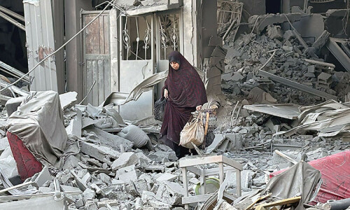
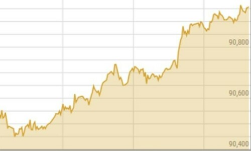
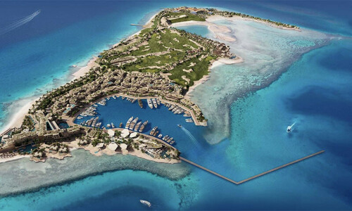

Palestinians say 100,000 residents trapped amid Israel’s north Gaza assault

What would a Trump or Harris presidency mean for Pakistan?
Shares at PSX rally 800 points, reach new high again

Analyst attributes upward trajectory to improved macroeconomic indicators, stable exchange rate.
Published about 2 hours ago
Related
Yet another record high at PSX on rate cut hopes
PSX sees higher listings, 7 companies raise Rs8bn
Major gains make shares at PSX breach 90,000 milestone
Imaan Mazari, husband sent on 3-day physical remand in terrorism case for ‘creating security risk’

Court rejects prosecutor's plea for 30-day custody.
Updated 3 minutes ago
Related
Human rights lawyer Imaan Mazari, husband arrested by Islamabad police
The price of courage
Imaan Mazari re-arrested outside Adiala Jail in Rawalpindi hours after getting bail
Live
Editorial: If done right, restored trade with India can also lead to better bilateral ties
Who is Sheikh Naim Qassem, Hezbollah’s new leader?
Seven battlegrounds, with swing vote history, to decide US presidency
Apple rolls out AI features across devices
AFP Published about 3 hours ago
Elon Musk was illegal migrant in US in 1990s
“I was on a J-1 visa that transitioned to an H1-B,” says Musk.
Reuters Updated about 20 hours ago

Saudi opens resort island at futuristic mega-city
The opening of the island, known as Sindalah, comes amid persistent doubts about Neom’s viability.
AFP Published 2 days ago